🚀 Bitnami Package for Grafana Setup Guide
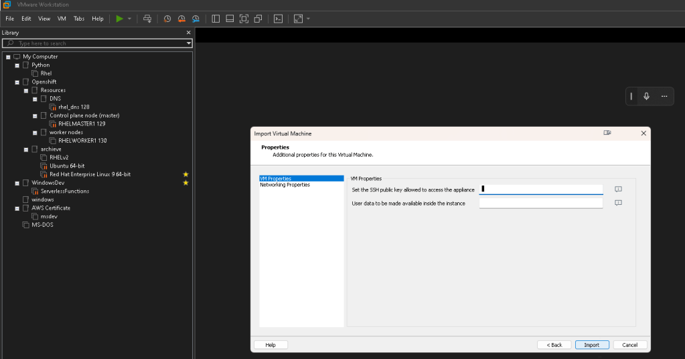
https://bitnami.com/stack/grafana/virtual-machine
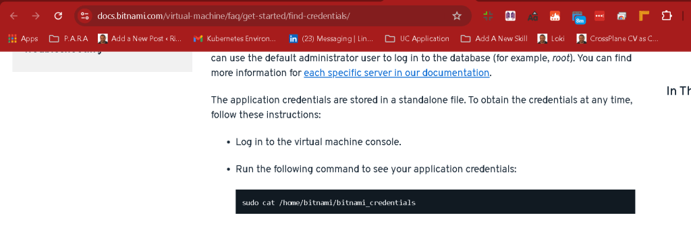
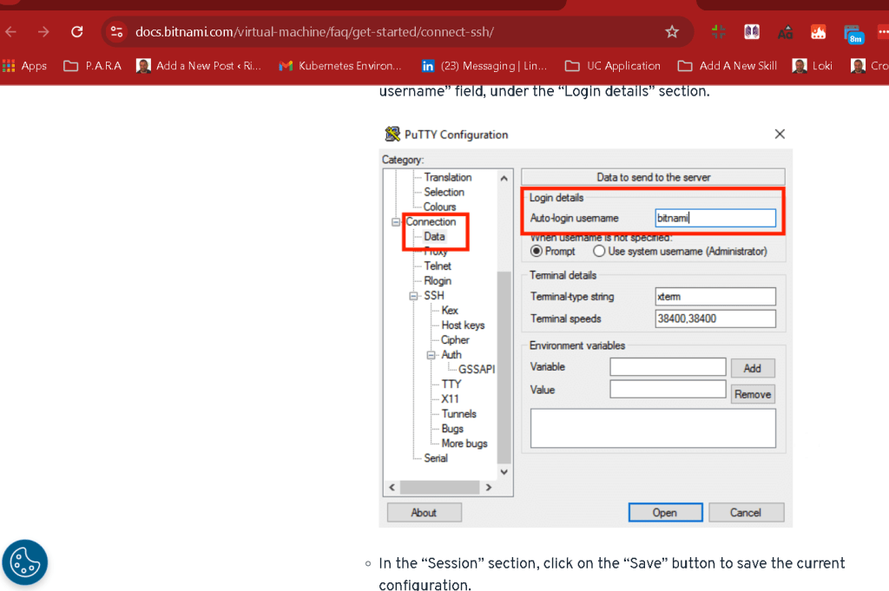
Intro messages is there
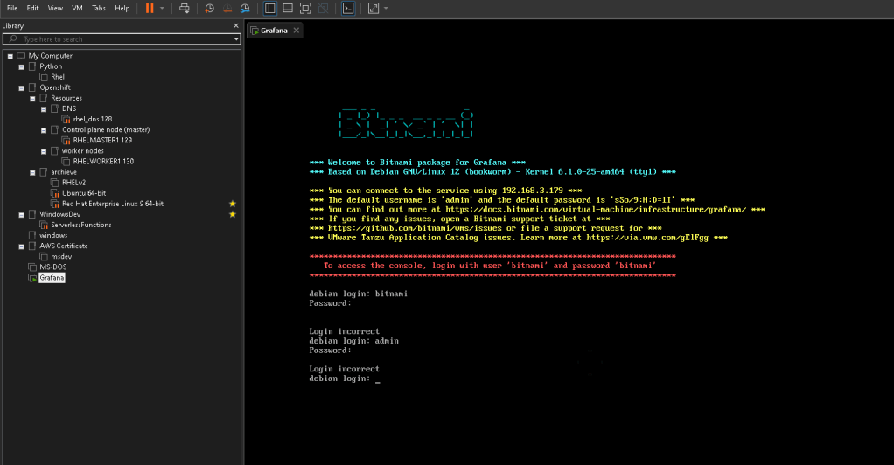
Not on the admin line but it has to be over the url and the network is already bridged for it.
Access to console it even there
Basic password and Change is there
bitnami and bitnami
If you've ever wondered how to set up a Bitnami Grafana instance, you're in the right place! In this blog post, I’ll walk you through my recent experience with the Bitnami package for Grafana, running on Debian GNU/Linux 12 (Bookworm).
** First Look at Bitnami Grafana**
Here’s a screenshot from the initial setup:

This is the first screen you will encounter when booting up your Grafana VM instance. The setup is simple and straightforward, thanks to Bitnami’s efficient packaging. Let’s dive into the steps to get started!
🔧 Steps to Access Bitnami Grafana:
-
Locate Your Instance:
-
Once your instance boots up, you'll see the IP address in the welcome screen. In this case, it's
192.168.3.179(your IP might be different). -
Login Credentials:
-
By default, the login user is
bitnamiand the password isbitnami. These are easy to remember but make sure to change them later for security purposes. -
Admin Access:
-
The default Grafana admin username is
admin, and the password is also provided on the screen (sSo9:H:D=11in this case). Make sure you keep this safe! -
Connect to the Dashboard:
-
Open your browser and enter the IP address, followed by port 3000, like this:
http://192.168.3.179:3000. -
Use the admin credentials to log in and start configuring your Grafana dashboards.
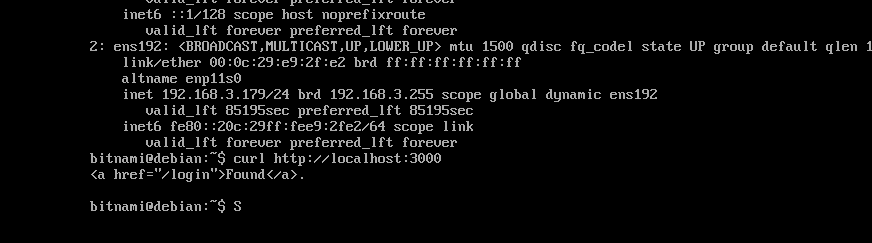
🚀 Why I’m Excited About Grafana
Grafana is a powerful tool for monitoring and visualizing data. Whether you’re tracking infrastructure metrics, or just playing around with some cool data visualizations, it’s a game changer. With Bitnami, the setup becomes seamless, and you can jump straight to what matters most—monitoring your systems!
💡 What I Want to Achieve
Through this setup, my goal is to build real-time monitoring dashboards that help me visualize key performance metrics of my infrastructure, all while leveraging Grafana’s integrations with various data sources such as Prometheus, InfluxDB, and more.
🔗 Connect with me:
-
💼 LinkedIn: Connect on LinkedIn
-
🐦 Twitter: Follow me on Twitter
-
🎥 YouTube: Subscribe to my YouTube
-
💻 GitHub: Check out my GitHub
That’s it for this quick guide! Stay tuned for more updates as I explore Grafana’s features and showcase some awesome dashboards.
Errors >
Not Turning on
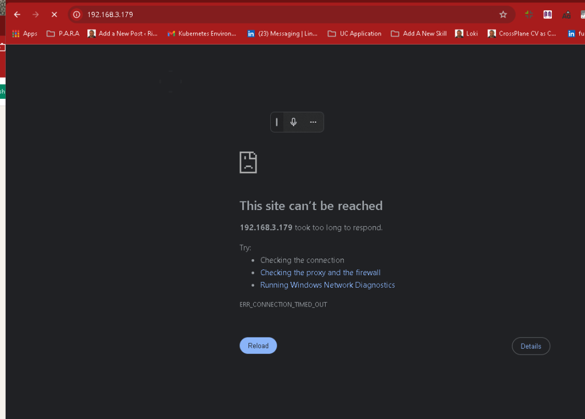
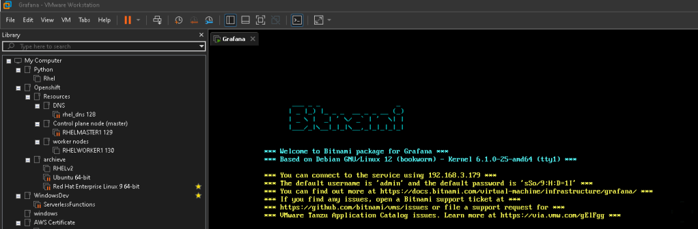
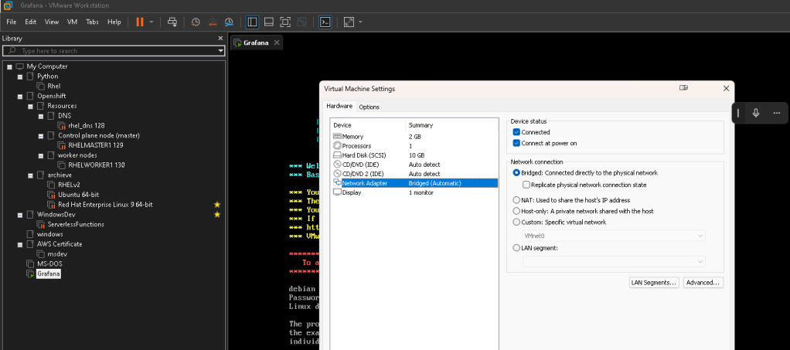
ip looks different
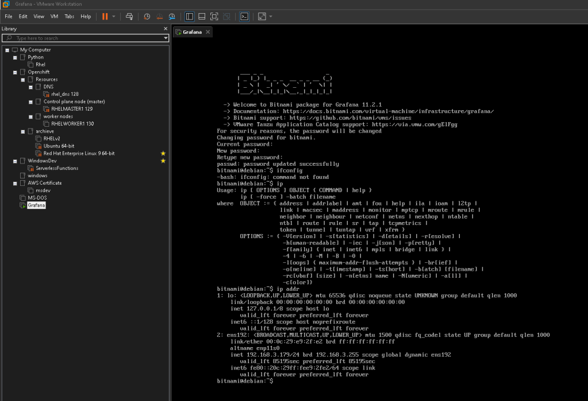
Dasbhboard reconnect retry reread the blog
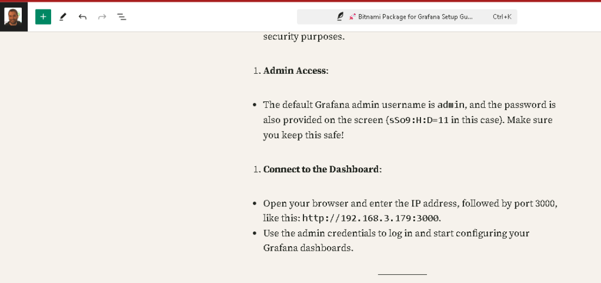
Error : Edge also does not work
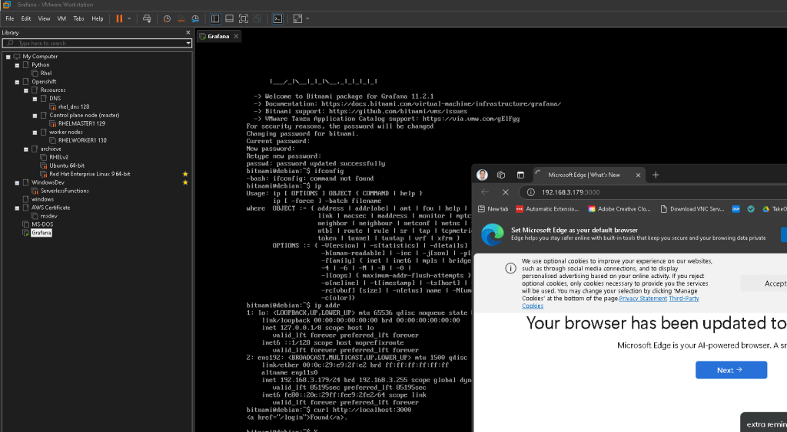
DEBUG
If http://192.168.3.179:3000/ isn't working, there could be a few possible reasons. Here are some troubleshooting steps you can try:
1. Check if Grafana is Running
- Ensure that the Grafana service is actually running on your machine. You can check by running the following command:
sudo systemctl status grafana
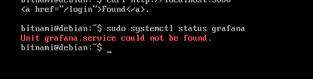
- If it's not running, start it with:
sudo systemctl start grafana
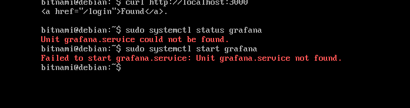
2. Firewall and Network Configuration
-
Make sure the necessary ports (especially port 3000) are open in your firewall settings. To allow traffic through port 3000, run:
sudo ufw allow 3000/tcp -
Also, check that your server is properly connected to the network, and the IP
192.168.3.179is correct and accessible from your current device.
3. Confirm the IP Address
-
The IP address may have changed. You can check your server's current IP address by running:
ip a -
Ensure you are using the correct IP address when accessing the Grafana dashboard.
4. Browser Issues
-
Clear your browser's cache or try accessing the URL from another browser or device.
-
Ensure there are no proxy settings or VPNs that might be affecting your connection.
5. Logs and Errors
- Check the Grafana logs for any errors that might give more clues:
sudo journalctl -u grafana
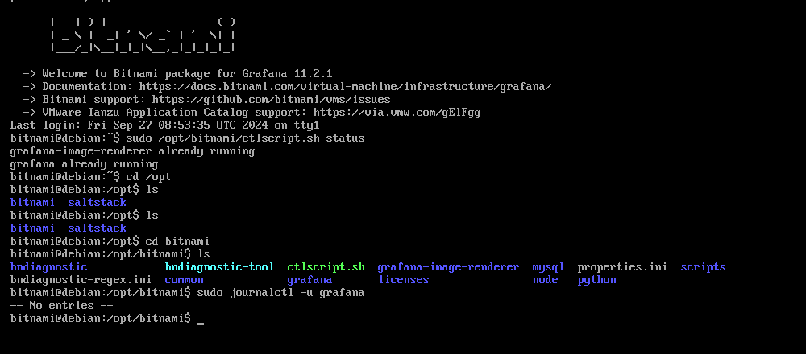
6. Restart the VM
- If nothing works, consider restarting the entire VM and try again:
sudo reboot
Let me know how it goes!
**REDEBUG AS THE GRAFANA NOT RUNNING **
It seems like the Grafana service is not recognized by systemctl on your system, which could mean that it's not properly installed as a service, or the package may not have been configured correctly. Since Bitnami packages often bundle services differently, here's what you can try:
1. Check if Grafana is Running from Bitnami Stack
Since you're using the Bitnami package, the services might be managed differently. Instead of using systemctl, Bitnami often uses its own scripts. You can try checking if Grafana is running through the Bitnami control script:
Run the following command to check the services:
sudo /opt/bitnami/ctlscript.sh status
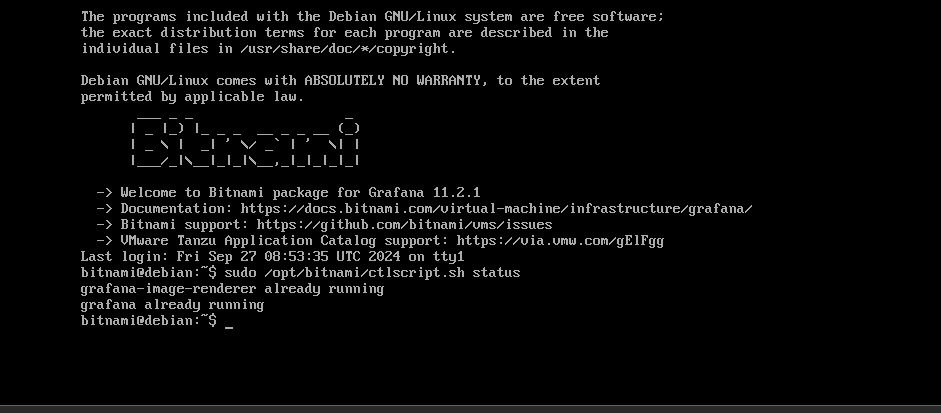
If Grafana is not running, you can start it by using:
sudo /opt/bitnami/ctlscript.sh start grafana
2. Check the Installed Path
If the above doesn’t work, make sure Grafana is installed correctly. Navigate to where Bitnami packages are usually installed:
cd /opt/bitnami/
Check if the Grafana directory exists:
ls
If it’s missing, Grafana might not have been properly installed.
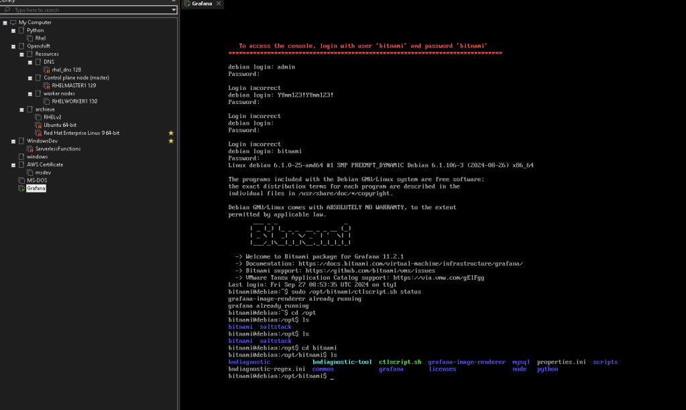
aDDING IT THERE
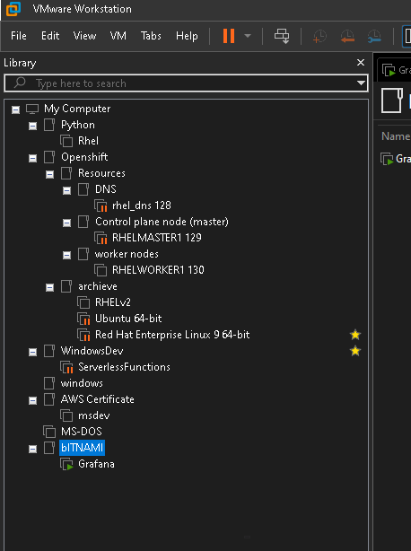
3. Use the Correct Service Name
Bitnami packages may use non-standard service names. If grafana.service isn't found, the service might be named differently. You can list all services with the following command to identify the exact name:
sudo systemctl list-units --type=service | grep grafana
4. Reinstall Grafana (Optional)
If nothing works, you may need to reinstall the Bitnami Grafana package to ensure everything is properly set up.
Let me know how it goes!
HOW DO I DEBUG WHERE IT IS STUCK
To debug the issue where your host machine cannot access http://192.168.3.179:3000/, despite VMware Workstation running the VM, there are a few steps you can follow to identify where the problem might be. This could be a network configuration issue, a firewall blocking access, or Grafana not running properly inside the VM.
Steps to Debug the Issue
1. Check Network Configuration
Make sure that the VM is connected to the correct network type. VMware Workstation can use several different network types (NAT, Bridged, Host-only). Here's how to verify that:
-
NAT Mode: The VM shares the host's IP but cannot be accessed from outside.
-
Bridged Mode: The VM gets its own IP on the same network as the host, and it should be accessible directly.
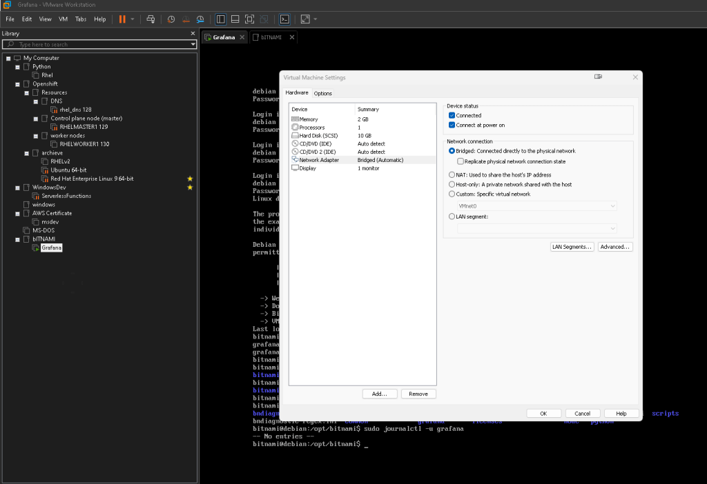
To check and modify the network mode in VMware Workstation:
-
Go to your VM settings.
-
Select the "Network Adapter" option.
-
Ensure the VM is set to Bridged Mode for direct network access. Save the settings and reboot the VM.
2. Verify VM's IP Address
Ensure the VM’s IP address is indeed 192.168.3.179. You can check the current IP address from within the VM using:
ip a
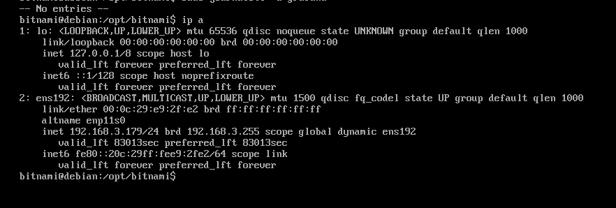
or
ifconfig
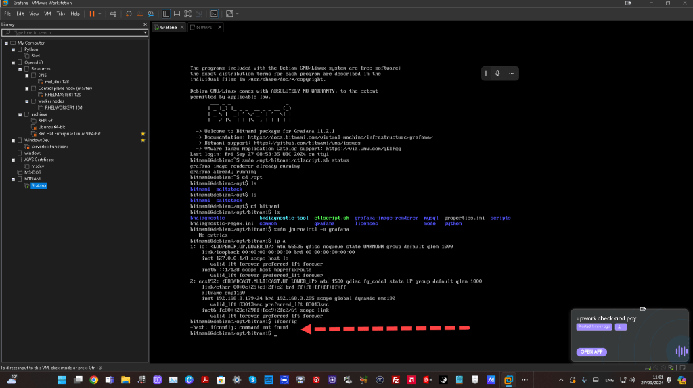
Verify the correct IP address and ensure it matches what you're trying to access in the browser.
3. Test Connectivity from the Host
Check if the host machine can reach the VM by pinging it:
ping 192.168.3.179
If the ping is successful, that means the network connection between the host and VM is working. If not, there might be a network misconfiguration or firewall issue.
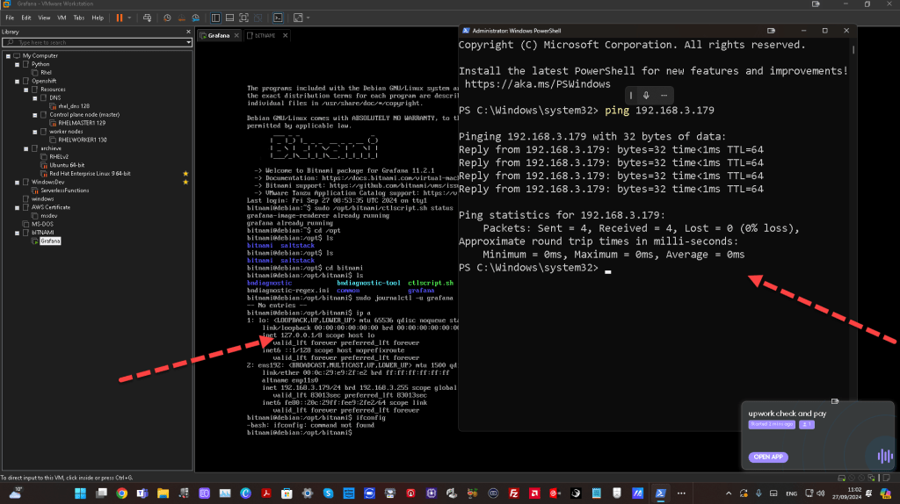
4. Check if Grafana is Listening on Port 3000
Log into the VM and check if Grafana is running and listening on port 3000:
sudo netstat -tulnp | grep 3000
This should return the Grafana process if it is running. If there is no result, Grafana might not be running, or it might be using a different port.
5. Check Firewall Configuration
Check if there's a firewall on the VM or host that could be blocking port 3000:
- On the VM, check the firewall status:
sudo ufw status
If the firewall is active, allow traffic on port 3000:
sudo ufw allow 3000/tcp
- On the host machine, make sure that no firewall is blocking incoming traffic to the VM.
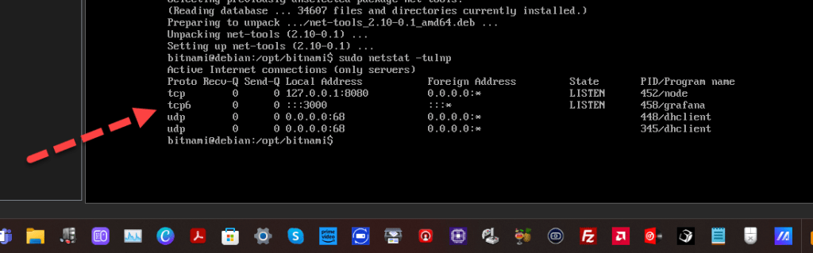
6. Check if Grafana is Running Properly
Since the previous command showed the Grafana service wasn't found, try running Grafana manually:
sudo /opt/bitnami/ctlscript.sh start grafana
If this command does not work or returns an error, reinstall the Bitnami package for Grafana or debug further using the logs:
sudo tail -f /opt/bitnami/grafana/logs/grafana.log
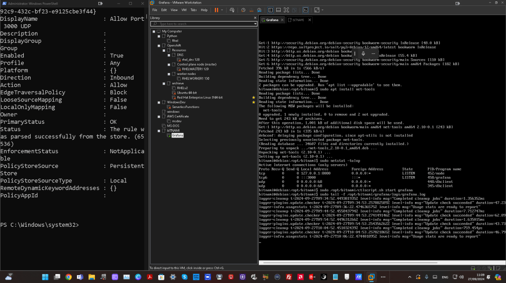
7. Access Logs for Networking Issues
If none of the above steps work, check the system logs for network-related issues on the VM:
sudo dmesg | grep eth
sudo journalctl -xe
These logs can show you if there are issues with the network adapter or services failing to start.
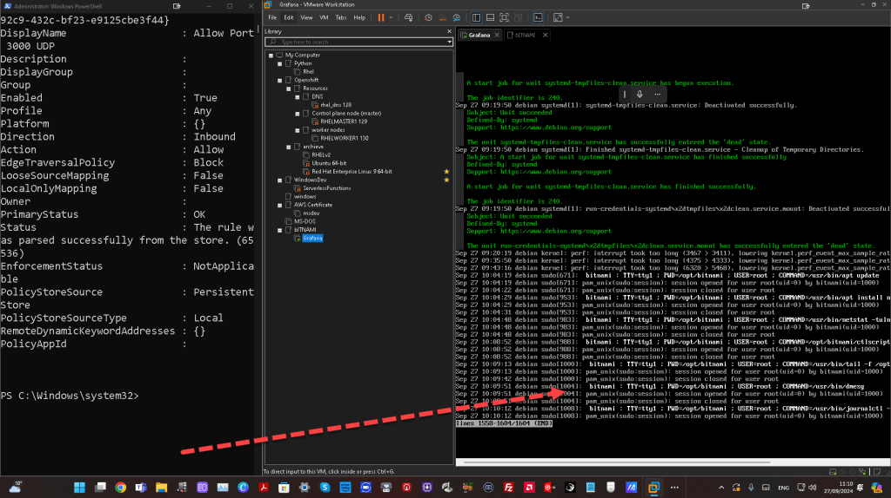
Common Fixes
-
IP Conflict: Ensure no other device on the network is using the same IP address.
-
NAT to Bridged: If your VM is in NAT mode, switch to Bridged mode and assign the VM a local IP that the host can access.
-
Port Conflict: Verify that another service isn't using port 3000 by using
netstat.
By going through these steps, you should be able to pinpoint where the issue lies and why your host machine cannot access the VM on port 3000.
Let me know which step yields the best results, and I can assist you further!
INSTALLS
It seems that the netstat command is not installed on your Debian system. In Debian (and other Linux distributions), netstat is part of the net-tools package, which might not be installed by default on newer distributions. Here's how you can install it:
-
Open a terminal on your Debian system.
-
Run the following command to install
net-tools:
sudo apt update
sudo apt install net-tools
Once installed, you should be able to use the netstat command. Alternatively, you can use newer tools like ss, which is part of the iproute2 package and provides similar functionality:
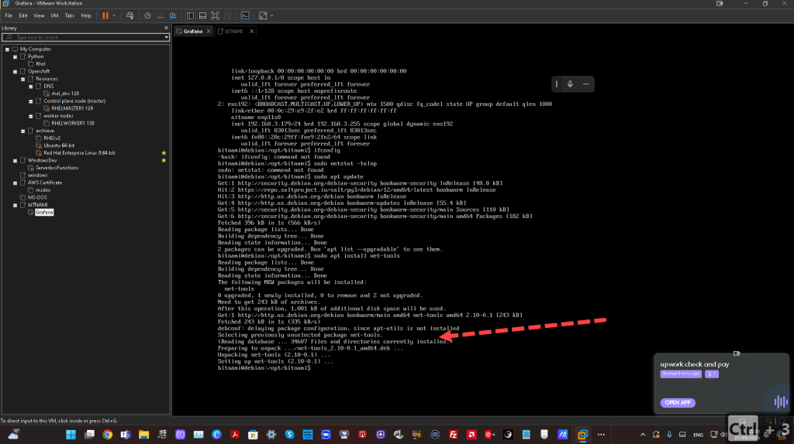
ss -tuln
This command will display listening ports and their associated services.
Let me know if you need further assistance!

POWERSHELL TO ENABLE 3000 ON THE HOST
To allow incoming traffic on port 3000 through the Windows Defender Firewall using PowerShell, you can use the following script. This will create a new inbound rule to allow TCP traffic on port 3000:
PowerShell Script:
Open PowerShell as Administrator and run the following commands:
Allow TCP traffic on port 3000
New-NetFirewallRule -DisplayName "Allow Port 3000" -Direction Inbound -LocalPort 3000 -Protocol TCP -Action Allow
Allow UDP traffic on port 3000 (if needed)
New-NetFirewallRule -DisplayName "Allow Port 3000 UDP" -Direction Inbound -LocalPort 3000 -Protocol UDP -Action Allow
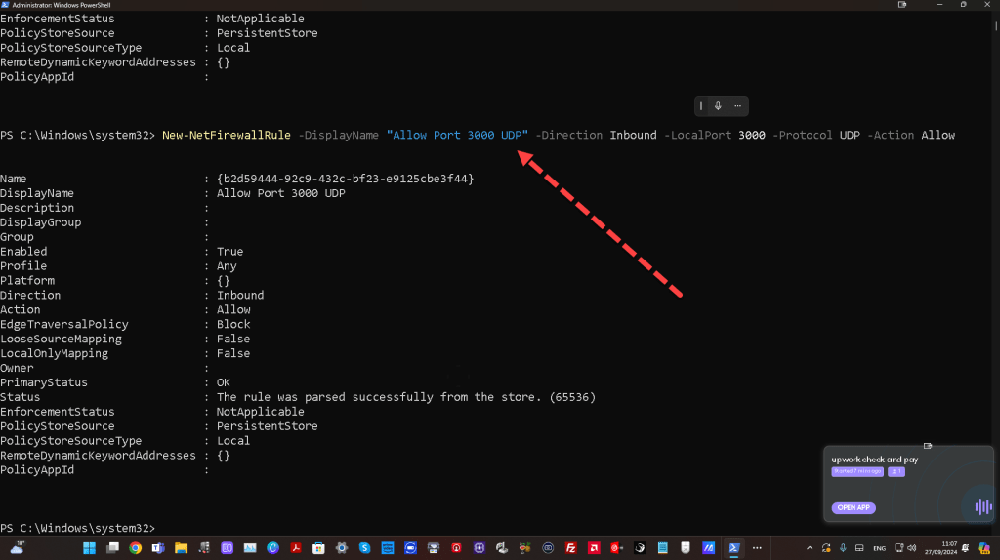
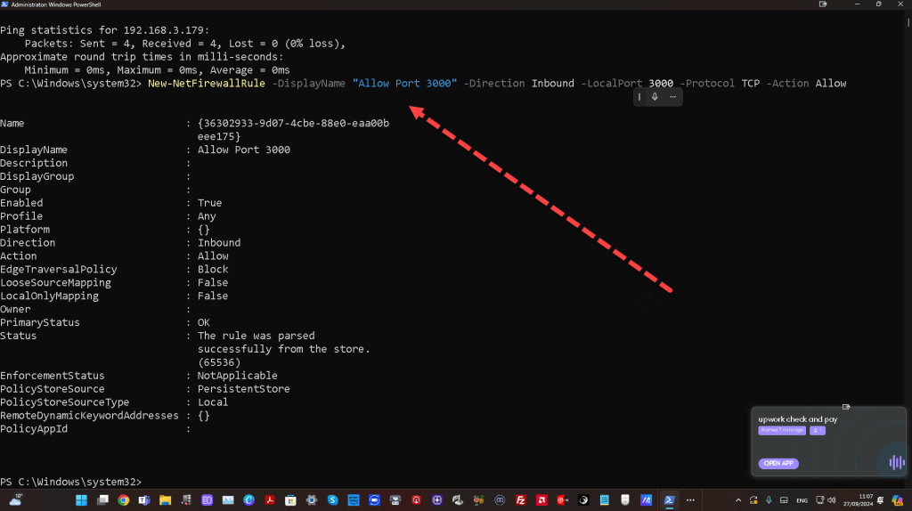
Explanation:
-
New-NetFirewallRulecreates a new firewall rule. -
-DisplayNamespecifies the name of the rule (you can customize this). -
-Direction Inboundspecifies that this rule is for incoming traffic. -
-LocalPort 3000specifies the port to open (in this case, 3000). -
-Protocol TCPspecifies that this rule applies to TCP traffic (you can also allow UDP if needed). -
-Action Allowallows the traffic that matches this rule.
Steps to Execute:
-
Open PowerShell as Administrator.
-
Copy and paste the script into the PowerShell window and press Enter.
This will create the firewall rule that allows traffic on port 3000. If you also need to allow UDP traffic, uncomment the second command.
Let me know if you need any further assistance!
TAKE LOCAL FIREWALL DOWN AND DEBUG
If http://192.168.3.179:3000/ is not opening after configuring the firewall rule, there could be several reasons for this issue. Let's troubleshoot and resolve the problem step by step.
1. Check if the Service is Running on Port 3000
Ensure that there is a service (like a web server or an application) listening on port 3000 on the VM or host. You can check if the port is in use by running the following command in PowerShell or Command Prompt:
netstat -an | findstr :3000
You should see an entry like this if a service is running on port 3000:
TCP 0.0.0.0:3000 0.0.0.0:0 LISTENING
If nothing is returned, it means no application is running on port 3000. Ensure that your application or web server is started and bound to the correct IP address and port.
2. Verify Binding Address
Ensure that the application running on port 3000 is bound to the correct IP address (192.168.3.179) or to 0.0.0.0 (which allows access from any IP address). If the application is bound to localhost (127.0.0.1), it won't accept connections from external sources.
Check your application's configuration to ensure it is set to listen on 0.0.0.0 or 192.168.3.179 instead of 127.0.0.1.
3. Test the Port Locally
Check if the port is accessible locally on the machine where the service is running:
- Open a browser or use
curlon the machine and try to accesshttp://localhost:3000orhttp://127.0.0.1:3000.
curl http://localhost:3000
If this works locally but not remotely, then the issue might be related to networking or firewall rules.
4. Check Network Adapter and IP Address
Ensure that the virtual machine or host has the correct IP address (192.168.3.179). Use the following command to confirm the IP address on the machine where the service is running:
ipconfig
Ensure that the IP address is within the 192.168.3.x range and that the network adapter is configured correctly.
5. Verify Firewall Rules
Ensure that the firewall rule you created is active and correct. Run the following command in PowerShell to confirm:
Get-NetFirewallRule -DisplayName "Allow Port 3000"
Also, confirm that the port is allowed for inbound traffic using:
Get-NetFirewallPortFilter | Where-Object { $_.LocalPort -eq 3000 }
6. Disable Windows Firewall Temporarily (for Testing)
If the firewall rule seems correct but the port is still not accessible, try temporarily disabling the Windows Firewall to rule out firewall issues:
Set-NetFirewallProfile -Profile Domain,Public,Private -Enabled False
Check if you can access http://192.168.3.179:3000/ with the firewall disabled. If it works, the issue is with the firewall configuration.
Re-enable the firewall after testing:
Set-NetFirewallProfile -Profile Domain,Public,Private -Enabled True
7. Check Router/Network Configuration
If the VM is behind a NAT or firewall (in a different network zone), ensure that port 3000 is forwarded correctly and that no other network restrictions exist.
8. Check VM's Network Mode (Bridged/NAT)
Ensure that your VM is in Bridged Mode (if using a VM) so that it is directly accessible from the local network. If the VM is in NAT Mode, it may not be reachable externally without configuring port forwarding in your virtualization software.
Try these steps and see if the issue is resolved. If you are still unable to access http://192.168.3.179:3000/, let me know, and we can further troubleshoot!
MORE DEBUG AFTER CURL SCREENSHOT
From the image, I can see that you're running a command curl http://localhost:3000 on a Debian system, and it returned a 302 redirect to /login, which indicates that the service running on port 3000 is functioning correctly locally. However, you're having trouble accessing it from outside the VM.
Checklist for External Access:
-
Firewall Configuration:
Sincecurlis working locally, the issue may be with external access. Verify that the firewall on your host machine or the VM allows traffic on port 3000, as discussed earlier. Double-check that the firewall rule allows inbound traffic for port 3000 using both theTCPprotocol and your external IP. -
Network Adapter Configuration:
Make sure that your VM's network adapter is set to Bridged Mode instead of NAT. In NAT Mode, external access is blocked by default. -
If you're using VirtualBox, go to the VM's settings → Network and select Bridged Adapter.
-
If you're using VMware or another virtualization platform, follow similar steps to ensure the VM has a network adapter that allows external access.
-
Service Binding Address:
Your service is running onlocalhost(127.0.0.1), meaning it’s only accessible within the VM itself. You need to bind the service to the VM's external IP address (192.168.3.179in this case) or to0.0.0.0(which allows access from any address). -
Check the configuration of your application (Grafana or whatever is running on port 3000) and ensure it is bound to the correct IP address. For example, in a typical Node.js application, you would change this:
app.listen(3000, '127.0.0.1');
to:
app.listen(3000, '0.0.0.0');
- Test Access via IP:
Once you've ensured the service is bound to0.0.0.0and the firewall allows traffic on port 3000, try accessing the service from an external machine by visitinghttp://192.168.3.179:3000/in a browser or usingcurlfrom another machine on the same network.
Let me know if you need help with any specific step, and we can troubleshoot further!
INSTALL FINDSTR(WINDOWS) > GREP( LINUX)
On Debian, findstr is a Windows command, and there is no direct equivalent of findstr in Linux distributions like Debian. However, you can use grep, which provides similar functionality.
To install grep on Debian (though it’s usually pre-installed), follow these steps:
Step 1: Update Package Lists
sudo apt update
Step 2: Install grep (if not installed)
sudo apt install grep
Step 3: Use grep Instead of findstr
For example, if you want to search for port 3000 in netstat, you can use the following command:
netstat -an | grep :3000
This will give you similar output to what findstr does in Windows, showing you the lines that contain :3000.
Let me know if you need further help with grep or any other Debian commands!
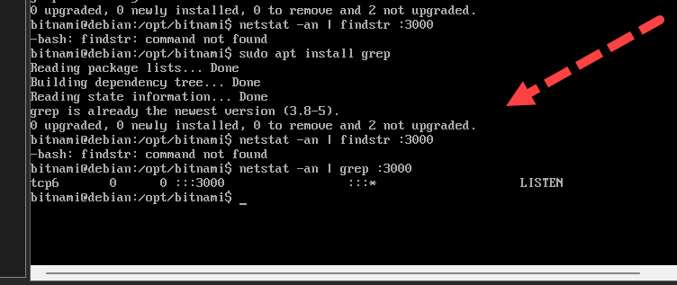
CHANGE 127.0.0.1 TO 0.0.0.0
To change the service binding address so that the application running on port 3000 can be accessed externally, you'll need to modify the configuration file or code of the application you are running (for example, Node.js, Grafana, or any other server).
Here’s a general guide depending on the application:
For a Node.js Application:
-
Locate the File Where Your Server is Listening (often
app.js,server.js, or similar). -
Find the
app.listenor equivalent function that starts the server, and check the second argument (which may be127.0.0.1orlocalhost). Example:
app.listen(3000, '127.0.0.1');
- Change the IP Address to
0.0.0.0(which allows the service to accept connections from any external IP):
app.listen(3000, '0.0.0.0');
-
Restart the Server after making the change to apply it.
-
If you're running a Node.js application, you can restart it with:
bash node app.js
(or whichever command you use to start your server).
For a Grafana Instance:
Grafana typically runs on port 3000, and to allow external access, you would change its binding address in the configuration file:
-
Locate the Grafana Configuration File:
-
The configuration file is typically located at
/etc/grafana/grafana.inior in the installation directory of Grafana. -
Edit the Configuration File:
sudo nano /etc/grafana/grafana.ini
- Find the HTTP Server Section:
Look for the[server]section and modify the following line:
http_addr = 127.0.0.1
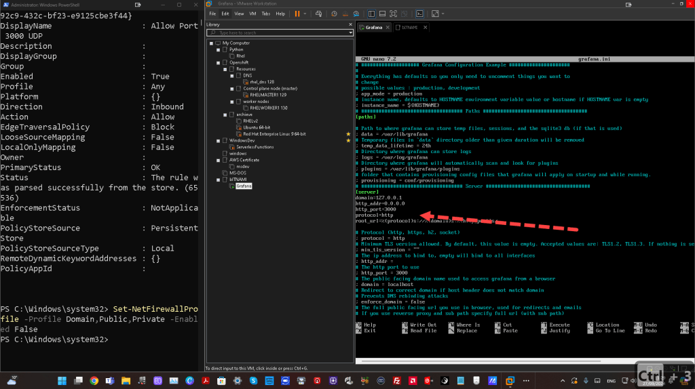
Change it to:
http_addr = 0.0.0.0
-
Save and Exit (
Ctrl + Xto exit, thenYto confirm). -
Restart Grafana to apply the changes:
sudo systemctl restart grafana-server
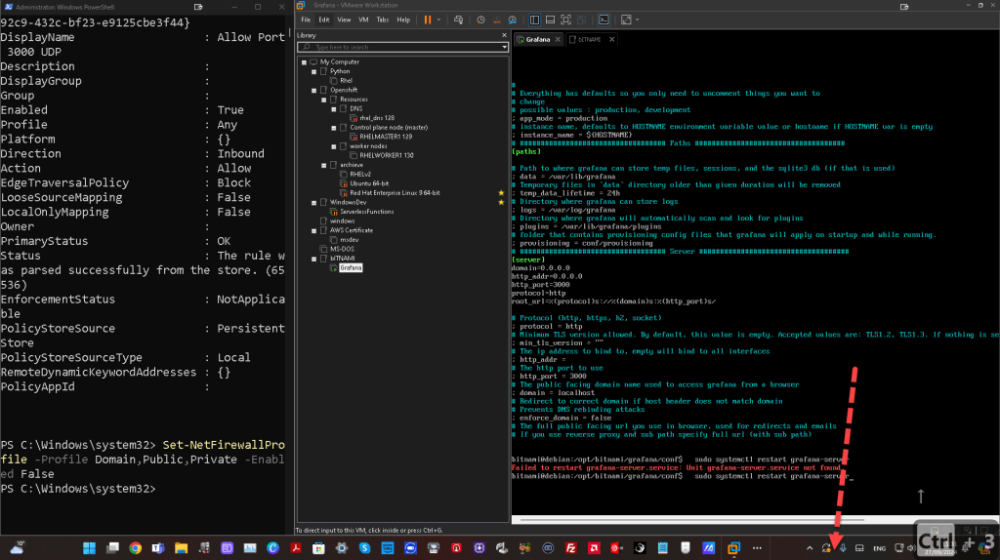
maybe a host error
General Steps for Other Applications:
-
Check the Configuration File or Code for a line where the service is bound to
localhostor127.0.0.1. -
Modify it to bind to
0.0.0.0instead. -
Restart the Service.
Let me know which application you are running (if it's not Node.js or Grafana), and I can give more specific instructions if needed.
''''''''''''''''''''''''''''''''''''''''''''''''''''''''''''''''''''
blaze
'''''''''''''
VMWARE START ERRORS ON THE GRAFANA AFTER FORCES STOP
The image shows an error message in a virtual machine environment, possibly in VMware Workstation. Here's what the error indicates:
-
Firmware Bug - APIC520 (IVT offset 2):
This part of the message indicates that the CPU tried to use an interrupt vector that is already in use. It's usually related to the Advanced Programmable Interrupt Controller (APIC). It's not critical but can cause the system to log the error. This issue is often related to a bug in the BIOS firmware or kernel. -
SMBus Host Controller not enabled:
The SMBus (System Management Bus) controller, responsible for communication between system components like sensors and power management hardware, is not enabled. This is usually harmless unless specific hardware needs SMBus for monitoring or control. -
/dev/sda1: clean:
This message indicates that the root filesystem on the virtual machine (/dev/sda1) has been checked and is clean, which means the disk file system is not corrupted and doesn't need any repairs.
How to resolve:
-
Firmware Bug: This can usually be ignored unless you see performance or stability issues. However, ensuring that the BIOS/UEFI firmware and VMware tools are up-to-date might help prevent it from appearing.
-
SMBus Host Controller Error: This can typically be ignored in virtual machines because SMBus is often not required. However, installing or updating VMware tools might resolve this issue.
-
No action needed for
/dev/sda1: cleanas this indicates that the file system is in good condition.
If the virtual machine boots normally after this screen, these messages can typically be ignored unless they are causing performance issues. Let me know if there's a specific issue you're facing with the VM!
==========================================
*** add another instance and retry ***
==========================================
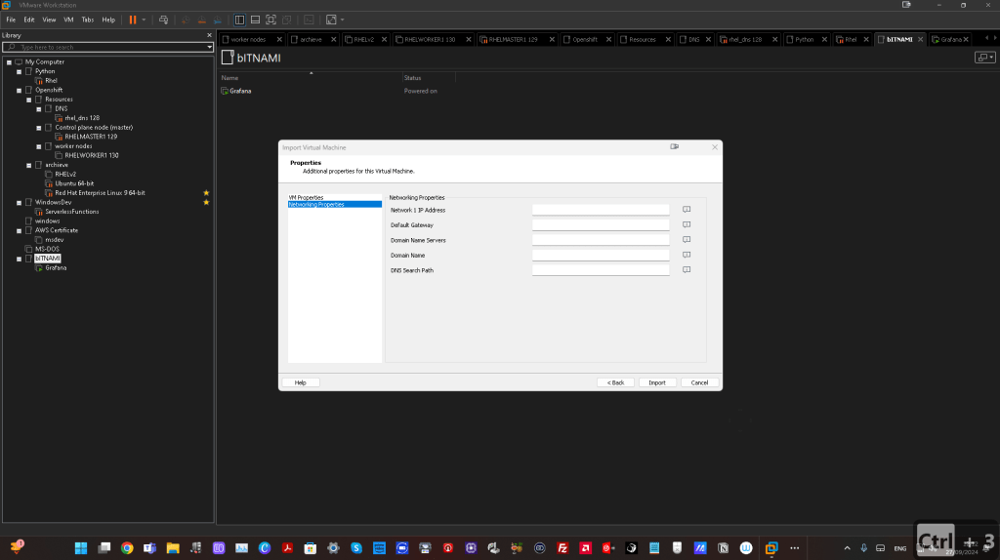
while importing theold one came online
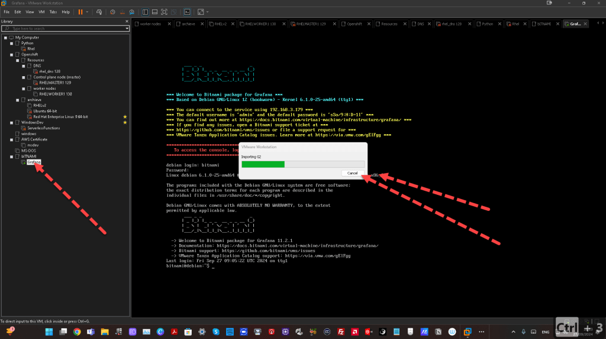
lost after the grafana updates i did on the domain
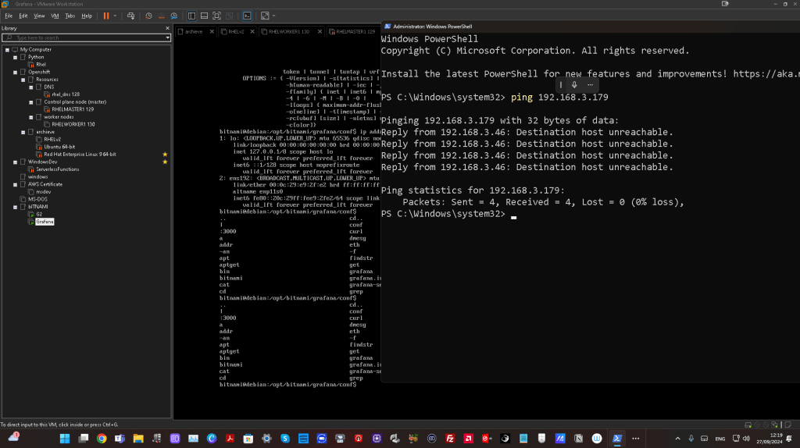
this time second machine does not shbow url
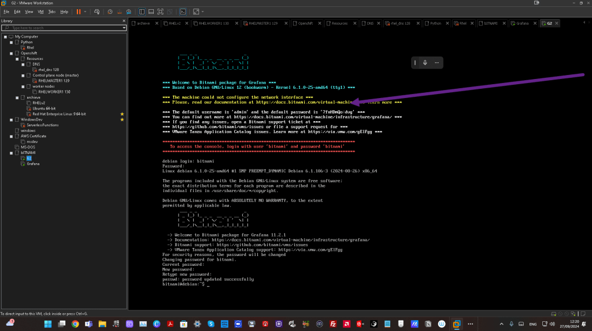
unable to get an ip the second machine as well
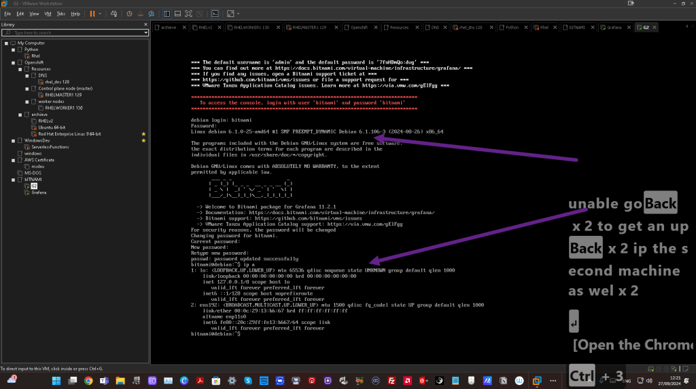
==========================================
*** GRAFANA IP NOT GIVEN IN THE MACHINE ***
==========================================
From the screenshot, it seems that the Bitnami Grafana virtual machine inside VMware Workstation is not getting an IP address for the network interface. The output of the ip a command shows the ens192 interface is up, but there is no valid IP assigned, and the state is UNKNOWN.
Here are some possible reasons and solutions for this issue:
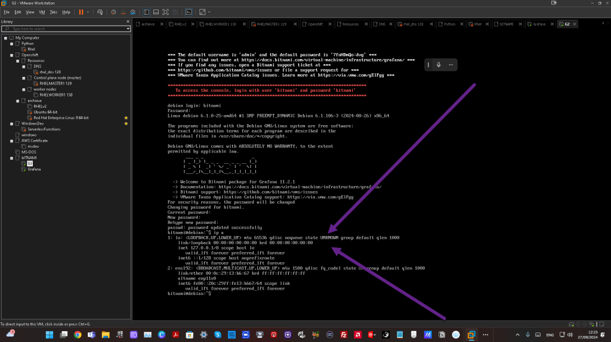
1. Network Adapter Configuration:
-
Check the network adapter settings in VMware: Ensure that the VM’s network adapter is configured correctly. If you want the VM to receive an IP address automatically, the adapter should be set to NAT or Bridged.
-
NAT vs. Bridged:
NAT: Allows the VM to share the host's IP address and connect to external networks.
- Bridged: Allows the VM to behave like an independent device on the network with its own IP.
2. DHCP Not Working:
- It’s possible that DHCP is not working correctly for the VM. You can try manually requesting an IP address by running:
sudo dhclient ens192
This command will attempt to acquire an IP address via DHCP.
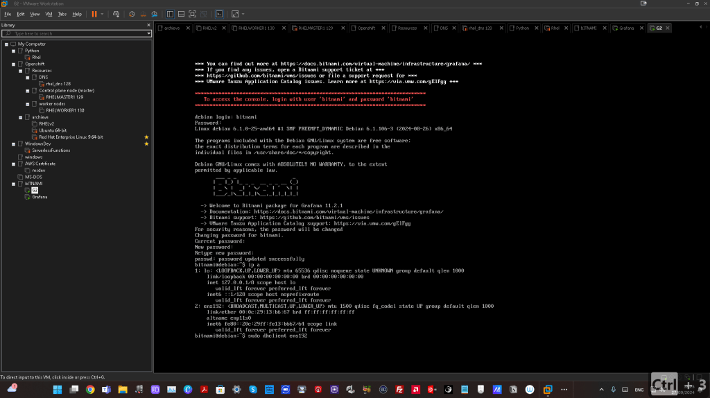
3. Network Driver or Service Issue:
-
Verify that the network services are running correctly on the VM. Sometimes network drivers or related services might not start correctly after boot. Restarting the networking service could help:
sudo systemctl restart networking -
Alternatively, you can check if all required network drivers are installed.
4. Static IP Configuration:
- If DHCP is not available or misconfigured, you could try setting a static IP for the network interface by editing the
/etc/network/interfacesfile (on older systems) or the netplan configuration for newer Debian systems.
5. VMware Tools:
- Ensure VMware Tools are installed on the VM. Sometimes network integration issues can occur if VMware Tools are not installed or not running properly.
You can start by verifying the network adapter settings in VMware Workstation and then try restarting the network services or assigning an IP manually. Let me know if you'd like more detailed instructions on any of these steps.
2 DIFFERENT NETWORKS
hOST 37 NOT 4?
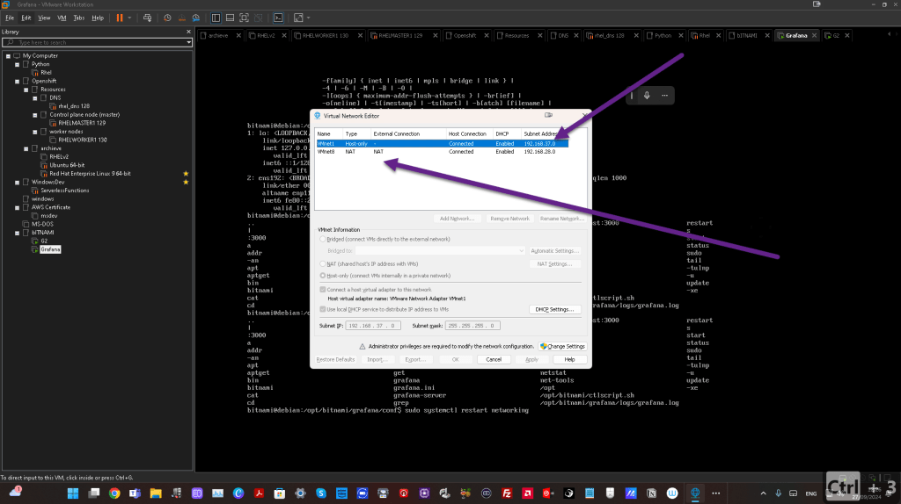
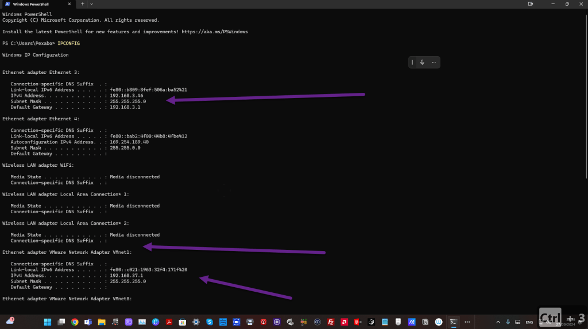
==================================================================
*** SHUTDOWN ***
==================================================================
If you're looking to turn off a Debian system, you can do it with the following command:
- Open a terminal.
- Run the shutdown command:
sudo shutdown now
Alternatively, you can use this command to reboot:
sudo reboot
Let me know if this helps or if you're looking for something specific!
==================================================================
*** REBOOT AND COMEBACK MAYBE IT IS RELATED TO WINDOWS ***
==================================================================
MY OPENSHIFT RUNS ITS OWN ACTION >>> PROCESS EASY TO FAIL AND FASTER TO RUN!
maybe this is the issue
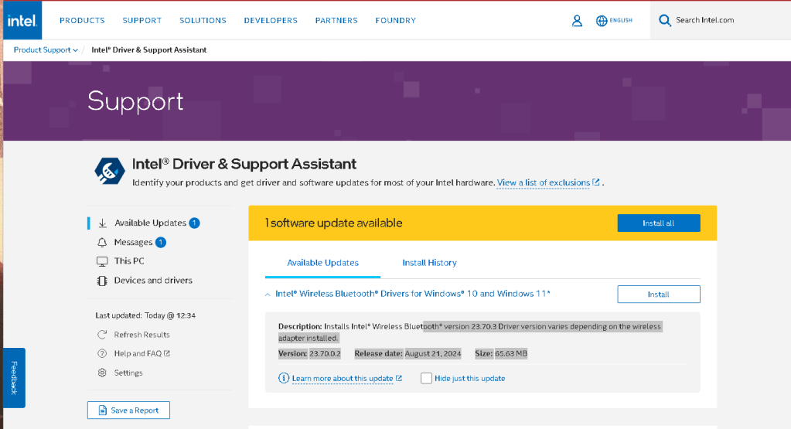
no install this time only one UNKNOWN and other is in action
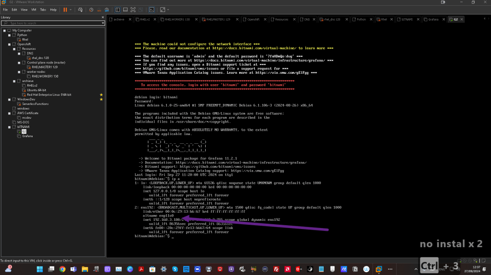
tried and failed > http://192.168.3.180:3000/
ssh connect fails
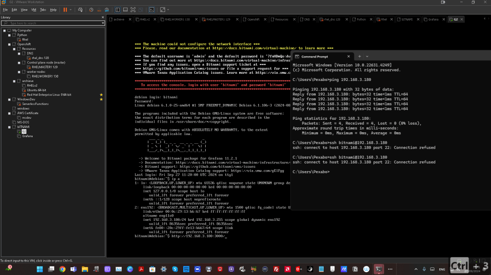
==================================================================
*** ssh connect to the bitnami box ***
==================================================================
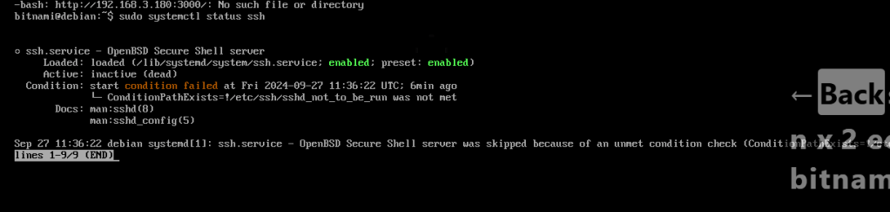
The error message ssh: connect to host 192.168.3.180 port 22: Connection refused suggests that the SSH server on the host machine (192.168.3.180) might not be running, or the SSH port (default is 22) is being blocked by a firewall or not configured properly. Here's how you can troubleshoot the issue:
1. Check if SSH service is running on the server
If you have access to the host machine, you can check whether the SSH service is running.
- For Linux (including Bitnami stacks):
Run the following command:
sudo systemctl status ssh
If it’s not running, start the SSH service:
sudo systemctl start ssh
- For Ubuntu (Bitnami Stack):
sudo systemctl status sshd
If the service is not active, start it:
sudo systemctl start sshd
2. Check if the firewall allows SSH (port 22)
- On the host machine, check if a firewall is blocking the SSH port (22). You can allow SSH through the firewall using:
sudo ufw allow ssh
Or manually open port 22:
sudo ufw allow 22/tcp
3. Verify SSH configuration
Check if the SSH server is configured to listen on port 22. Open the SSH configuration file (/etc/ssh/sshd_config):
sudo nano /etc/ssh/sshd_config
Make sure the following line is present and not commented out:
Port 22
After modifying the configuration file, restart the SSH service:
sudo systemctl restart ssh
4. Ensure the host machine’s IP is correct
Make sure that 192.168.3.180 is the correct IP address of the machine you’re trying to connect to. You can verify the local IP address of the server using:
ifconfig # or ip a
5. Check if port 22 is open on the host
Use nmap to see if port 22 is open on the remote machine:
nmap 192.168.3.180 -p 22
If it shows that port 22 is closed, there might be an issue with the SSH server or firewall.
Let me know if any of these steps help or if the problem persists!
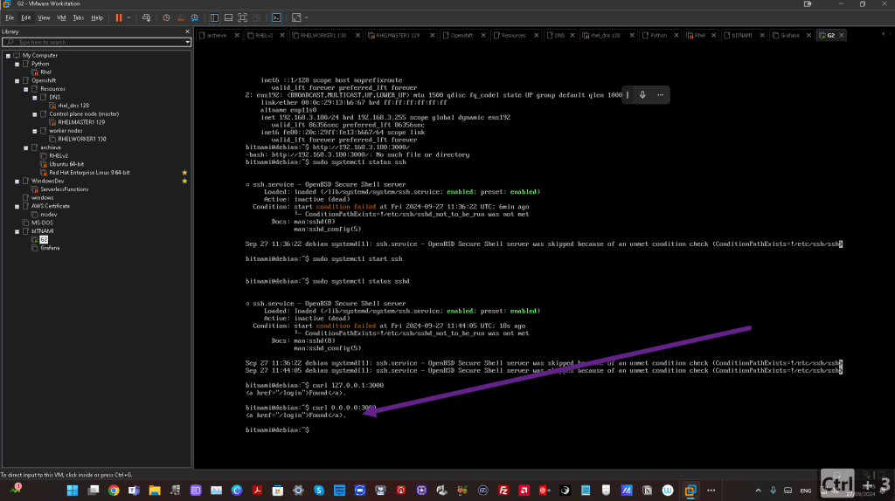
==================================================================
*** WORKS AFTER THE SSH BLOKER REOMOVAL ***
==================================================================
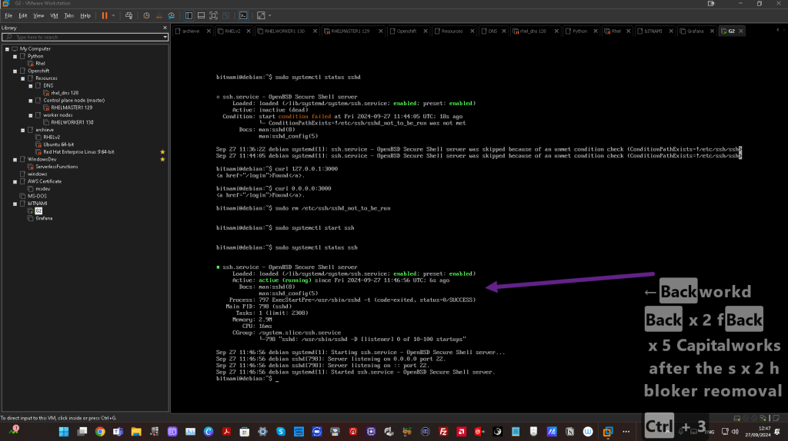
==================================================================
*** TAKE IT FROM WINDOWS AND MOVE TO LINUX ***
==================================================================
To copy your SSH public key from a Windows machine and move it to the Linux server for passwordless authentication, you can follow these steps:
1. Generate an SSH Key on Windows (if not already available)
First, ensure you have an SSH key pair on your Windows machine. If you haven't generated one, follow these steps:
-
Open PowerShell or Command Prompt (as administrator).
-
Run the following command to generate the SSH key:
ssh-keygen -t rsa -b 4096
You can press Enter to accept the default location (which is C:\Users\<YourUsername>\.ssh\id_rsa) and create the key.
This will generate two files:
-
id_rsa: the private key -
id_rsa.pub: the public key
2. Find the Public Key on Windows
Locate your public key (id_rsa.pub). By default, it will be in:
C:\Users\
You can open this file with Notepad or any text editor:
notepad C:\Users\
Copy the entire contents of the id_rsa.pub file to your clipboard.
NOTEPAD IT
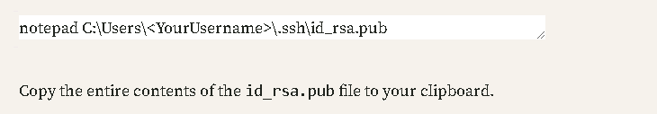
3. Transfer the Public Key to the Linux Server
Now, you need to transfer this public key to the remote Linux server. Follow these steps:
- Login to your Linux server (using a password or alternative method): Use the following command in PowerShell or Command Prompt to log in to your server using a password or another form of authentication (if it's still possible):
ssh bitnami@192.168.3.180
- Create the
.sshdirectory on the Linux server (if it doesn’t exist): Once logged in, make sure the.sshdirectory exists:
mkdir -p ~/.ssh
-
Move the public key to
authorized_keyson the Linux server: -
Open the
authorized_keysfile (create it if it doesn’t exist):nano ~/.ssh/authorized_keys -
Paste the contents of the public key (
id_rsa.pubfrom Windows) that you copied earlier. -
Save and close the file by pressing
CTRL+X, thenY, and finallyEnter. -
Set the correct permissions on the Linux server: Make sure the permissions on the
.sshdirectory andauthorized_keysfile are correct:
chmod 700 ~/.ssh
chmod 600 ~/.ssh/authorized_keys
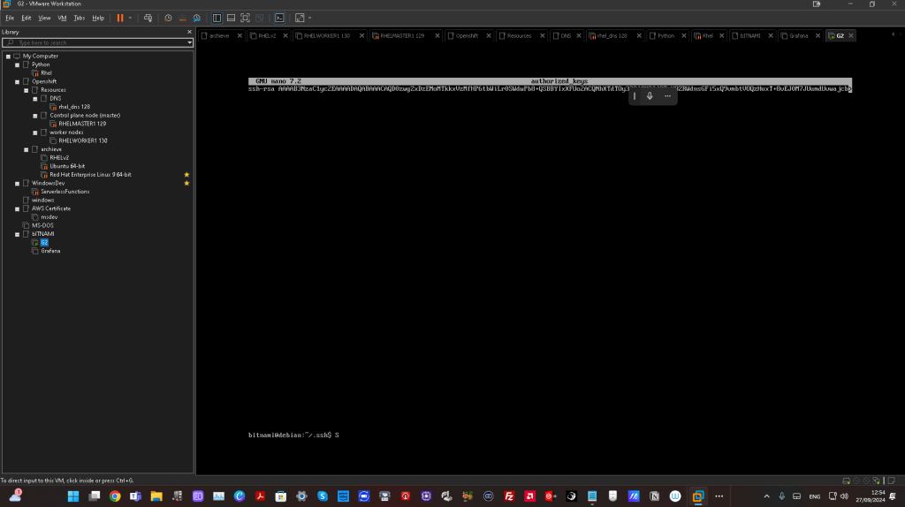
4. Test the SSH Connection from Windows
Now, go back to your Windows machine and test the SSH connection by running:
ssh bitnami@192.168.3.180
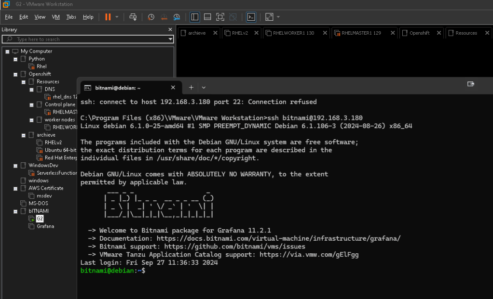
This time, you should be able to connect without entering a password, as the public key is now configured for authentication.
5. Optional: Disable Password Authentication (for security)
If you want to force public key authentication and disable password authentication for increased security, you can edit the SSH configuration file on the Linux server:
- Edit the SSH configuration file:
sudo nano /etc/ssh/sshd_config
- Find and modify (or add) the following lines:
PasswordAuthentication no
PubkeyAuthentication yes
- Save and close the file, then restart the SSH service:
sudo systemctl restart ssh
This will ensure that only public key authentication is allowed, and no passwords can be used to log in.
Let me know if you need further assistance!
==================================================================
*** ask question better ***
==================================================================
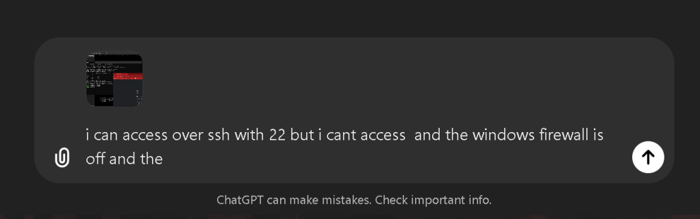
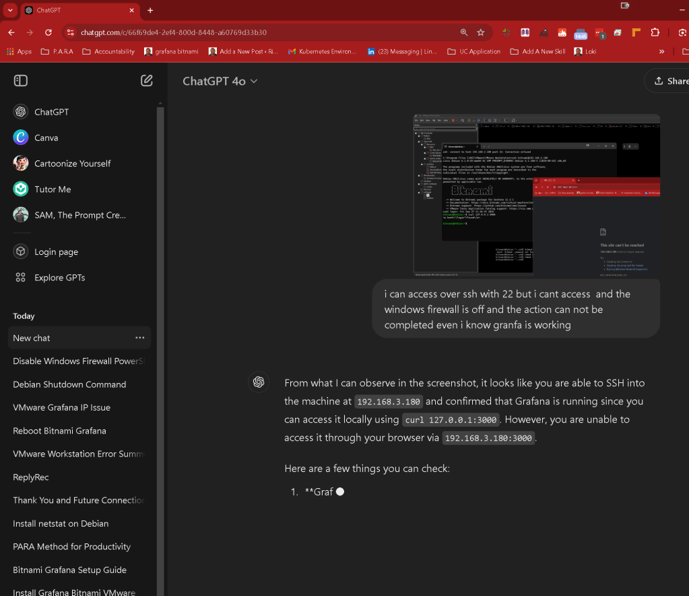
From what I can observe in the screenshot, it looks like you are able to SSH into the machine at 192.168.3.180 and confirmed that Grafana is running since you can access it locally using curl 127.0.0.1:3000. However, you are unable to access it through your browser via 192.168.3.180:3000.
Here are a few things you can check:
- Grafana Binding: Ensure that Grafana is not only listening on
127.0.0.1(localhost) but also on all interfaces (0.0.0.0). Check the Grafana configuration file (grafana.inior wherever your Grafana config is stored) and look for thehttp_addrsetting under[server]. It should look like this:
[server]
http_addr = 0.0.0.0
http_port = 3000
This will allow external connections, not just from localhost.
-
Firewall/Network Configuration:
-
You mentioned that the Windows firewall is off, but double-check if any internal Linux firewall (like
iptablesorufw) is blocking connections to port 3000. You can temporarily disable it to test:
sudo ufw disable -
Port Exposure in VMware/Virtual Environment:
-
If you are using VMware, ensure that the port forwarding rules or network configurations allow external access to port
3000from the host (your Windows machine) to the virtual machine.
-
Grafana Logs:
-
Review Grafana logs (
/var/log/grafana/grafana.logor equivalent depending on your setup) to ensure there are no errors related to networking or access control. -
DNS Resolution or Proxy:
-
Check if any proxy settings in your Windows system or browser could be interfering with your connection to
192.168.3.180.
Try these steps, and if the issue persists, I can help you further troubleshoot based on your findings.
==================================================================
*** FIND ALL GRAFANA INIS ***
==================================================================
To find the grafana.ini configuration file in a Linux box, you can try the following steps:
-
Default Location:
Grafana’s default configuration file is usually located in one of the following directories: -
/etc/grafana/grafana.ini -
/usr/share/grafana/conf/defaults.ini(less commonly modified, but you can check here for reference) -
Search for the File:
If you are unsure of the location, you can use thefindcommand to search for thegrafana.inifile:
sudo find / -name grafana.ini 2>/dev/null
This command will search your entire system for the grafana.ini file. The 2>/dev/null part is optional and just suppresses permission-related errors during the search.
- Check Running Process Configuration:
You can also check how Grafana was started by viewing the running process withps:
ps aux | grep grafana
This may show the full command line used to start Grafana, which sometimes includes the path to the configuration file if specified with the --config flag.
- Check Grafana Service:
If Grafana is running as a service, you can check the service file for configuration file details:
sudo systemctl status grafana-server
This will show the status of the Grafana service, and might provide additional information about its configuration.
- Docker/VM Note:
If you’re running Grafana inside a container or virtualized environment, the file paths might be different. In that case, you might need to inspect the container or VM setup.
Once you locate the grafana.ini, you can edit it using your preferred text editor (e.g., nano or vi):
sudo nano /etc/grafana/grafana.ini
Let me know if you need more assistance!
Imported from rifaterdemsahin.com · 2025